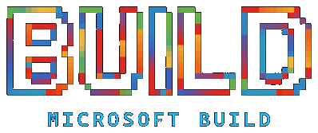

Friction Becomes Product Strategy.
A persistent gap can become a workflow map, a prototype, an automation, or a tool that compounds the next build.

Microsoft Build 2026Reportby Mayowa AlaketuMicrosoft Build 2026 / San Francisco and online
My personal read on what Microsoft Build 2026 made feel immediate: creativity and determination matter, but the multiplier is the system around the idea. With the right workflow, tools, data, security, and feedback loops, a concept can move from raw spark to prototype, product, deployment, and scale.
The big shift
Across the announcements, the useful signal was simple: the path from idea, prototype, secure workflow, deployment, and iteration is becoming more accessible for builders who know how to design responsibly.
A persistent gap can become a workflow map, a prototype, an automation, or a tool that compounds the next build.
The important shift is designing agents and workflows that assist the build itself: planning, drafting, testing, retrieval, data connection, and repeatable execution.
Security, compliance, identity, evals, observability, and governance are not later-stage polish. They are part of whether the build is real.
Interactive stack explorer
Click through the layers. The priority here is Windows, GitHub, OpenAI, and the practical chain from concept to governed deployment, with the newer platform pieces supporting that path.
Build signals
These are the moments that best explain where Microsoft is pointing builders: agentic development, Windows as a trusted runtime, model-powered capability, production governance, and data-backed deployment.
Signal
My core takeaway
My biggest takeaway from Microsoft Build was that the full builder pathway is becoming more accessible: idea, product strategy, workflow design, prototype, data architecture, agents, security, cloud infrastructure, deployment, evals, observability, and iteration. Windows and GitHub made that pathway feel practical. Microsoft Foundry, OpenAI-compatible agent patterns, and the broader model ecosystem made the capability feel deeper. Compliance, cybersecurity, governance, and cost control are what make the work credible enough to scale.
Start with a real gap, workflow, or idea that is worth turning into a structured solution.
Translate the idea into product strategy, UX flow, data, permissions, and success signals.
Use GitHub, OpenAI, agents, RAG, databases, and automation to build tools that make the next build faster.
Add security, compliance, evals, observability, and approval paths before the system earns scale.
Deploy, learn from feedback, manage cost and reliability, and keep human judgment in the loop.
That is the personal part of Build for me: individual builders have more leverage than ever, but the responsibility has to move at the same speed as the ambition.
What it means
Build 2026 was a developer event, but the implications stretch across leaders, builders, security teams, creators, and anyone trying to understand where AI work is heading.
Audience
From my Build notebook
These were the sticky ideas from my event notes after Build: some public-facing, some future-facing, all pointing toward agents as real systems.
Rayfin and Fabric made the backend problem feel central. The Build signal was clear: generated applications still need data, identity, permissions, security, governance, and reliable deployment.
As agent toolchains get more capable, the important discipline is proving what they can access, what they changed, how they were tested, and who approved the result.
Cloud AI remains important, but local and hybrid execution matter for privacy, resilience, cost control, and workflows that need tighter operational control.
Source map
I combined official Microsoft/GitHub materials with my public-facing notes and synthesis. Product status can change, so source links stay visible.
Signed
My read: Build made the builder pathway feel more concrete. Windows, GitHub, Microsoft Foundry, OpenAI-compatible agent patterns, and Microsoft's data and governance layers make it easier to move from idea to working system when the work is secure, observable, and governed.